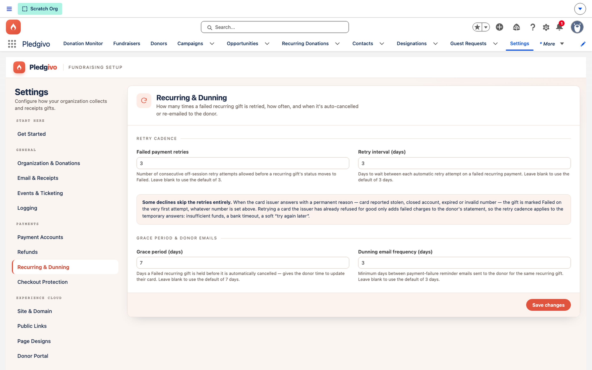

Guides
Configure recurring dunning#
When a recurring charge fails, four settings decide how many times it's retried, how long the gift stays active while retrying, and how often the donor is emailed.
Watch it first#
The four dunning numbers being set to the values described below — three retries, three days apart, a seven-day grace period, and a reminder every three days.
Where to configure it#
Settings → Payments → Recurring & Dunning.

**What it shows.** The Recurring & Dunning panel, grouped into Retry Cadence (Failed payment retries, Retry interval) and Grace Period & Donor Emails (Grace period, Dunning email frequency) — each field's helper text spells out exactly what it controls.
The four settings#
| Setting | Field | Default | What it controls |
|---|---|---|---|
| Failed Payment Retries | Failed_Payment_Retries__c |
3 | How many times RecurringRenewalBatch retries a failed charge before treating it as exhausted |
| Retry Interval (days) | Retry_Interval_Days__c |
3 | A flat number of days between retry attempts (not a backoff curve) |
| Grace Period (days) | Grace_Period_Days__c |
7 | How many days after retries are exhausted the recurring gift stays active before RecurringAutoCancelBatch cancels it |
| Dunning Email Frequency | Dunning_Email_Frequency__c |
3 | How often, in days, the donor receives a failed-payment email while retries continue |
How they interact#
flowchart TD
A[Charge fails] --> B[Retry 1 after Retry_Interval_Days]
B --> C[Retry 2]
C --> D[Retry 3]
D -->|All retries exhausted| E[Grace_Period_Days elapses]
E --> F[RecurringAutoCancelBatch cancels the gift]
B & C & D -.dunning email every Dunning_Email_Frequency days.-> G[Donor]With the defaults, a donor whose card fails on a retryable decline (e.g., insufficient funds) gets roughly two weeks and three retry attempts — plus periodic reminder emails — before their recurring gift lapses. A terminal decline (e.g., a stolen or expired card) skips the retry cadence entirely and fails immediately, moving straight to the grace period — retry attempts don't help against a card Stripe has permanently declined. Tighten these if failed payments need faster resolution (e.g., a small org that follows up by phone); loosen them if you'd rather give donors more room before losing a recurring gift, at the cost of more retry attempts against a declining card.
What happens on cancellation#
Once RecurringAutoCancelBatch cancels a recurring gift, no further renewal charges are
attempted. The Recurring_Donation__c record and its full donation history remain — nothing is
deleted — but its status reflects the cancellation, and it drops out of the active-renewal
population that RecurringRenewalBatch processes going forward.
Related#
-
Recurring giving concept
How the self-managed billing schedule and saved payment methods work.
-
Monitor & diagnose
Read what the app logged about a failed renewal, and how long those logs are kept.